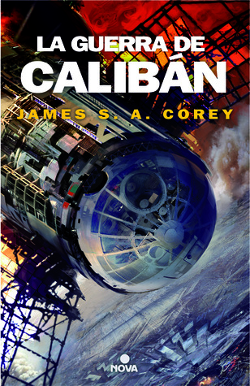

La guerra de Calibán (The Expanse, #2)
Reseña por Jorge I. Zuluaga

Ver reseña en GoodReads (necesita cuenta)
Antes de empezar, creí que The Expanse era simplemente otra serie televisiva más de ciencia ficción —basada o no en uno o varios libros (no lo sabía, debo confesarlo)— que describía un mundo futuro (utópico, tal vez) en el que los humanos nos habíamos expandido por el sistema solar, creando en el proceso la semilla de una especiación; es decir, «ramas» diferenciadas de nuestra especie, acostumbradas a vivir en condiciones ambientales muy distintas. Creía también que la trama iba sobre los asuntos políticos y sociales derivados de esa expansión, los cuales conducirían seguramente a conflictos, batallas espaciales y otras monerías de las que disfrutan quienes se enganchan fácilmente con estas historias de acción futurista.
Y no estaba tan mal encaminado. Solo que me faltaba cerca del 60 % o más de los ingredientes de esta increíble historia y del mundo futuro que describe. Como cualquier buena obra literaria o cinematográfica, The Expanse me tenía reservadas —y espero que lo mismo ocurra con quienes vayan a empezar la saga— varias sorpresas que iré describiendo en esta reseña extendida. Voy a repetir este mismo texto en todos los libros para evitar ser redundante y, naturalmente, a medida que vaya avanzando con nuevas entregas, se irán agregando nuevos detalles.
Importante 1: si no conocen nada de The Expanse, tal vez esta reseña podría revelar detalles que es mejor no conocer antes de comenzar a leer los libros. Tampoco quiero esconder el texto tras una advertencia de spoilers porque eso evitaría que algunas personas lo lean, pero es importante que lo sepan antes de continuar.
Importante 2: No vean la serie antes de leer los libros. Punto y aparte.
Notas generales
Una de las mejores cosas de The Expanse es que los elementos de la historia completa se van conociendo solo a medida que se suceden los libros. La organización social y política hace su aparición recién hacia la mitad del primer volumen. El primer conjunto completo de escenas y lugares en la propia Tierra solo lo descubrimos en el segundo libro, donde se esbozan también los primeros hitos de la expansión por el sistema solar exterior, iniciada con la instalación de instrumentación científica en el sistema joviano.
Muchas de las ideas tecnológicas de esta saga me han encantado. La mayoría, por supuesto, son inalcanzables todavía a la fecha en la que escribo esta reseña (fusión nuclear a baja escala, modificaciones genéticas en línea germinal, agricultura espacial a gran escala, etc.). Otras, sin embargo, aunque no parecen cercanas, se presentan como posibilidades teóricas muy interesantes.
Por ejemplo, el hecho de que hoy sepamos que los viajes interplanetarios duran entre meses y décadas hace lucir la expansión de la humanidad por el sistema solar como un imposible. O, por lo menos, lo es hasta el momento en el que te das cuenta de que nuestras estimaciones de los tiempos de los viajes espaciales se han hecho siempre sobre la base de naves que viajan con velocidad constante. Pero en The Expanse la aceleración es la clave de todos los viajes espaciales tripulados (y las sondas no tripuladas, aunque menos comunes, también dependen de la aceleración constante).
No fue hasta leer estas novelas que caí en la cuenta de que, con aceleración continua, el sistema solar se convierte en un lugar mucho más «pequeño», más alcanzable para la humanidad. La lectura de esta obra me ha empujado incluso a pensar en la posibilidad de realizar una investigación académica relacionada con las leyes dinámicas que regirían la navegación acelerada en el sistema solar. Tal vez sea el momento de que empecemos a buscar las «leyes de Kepler» de objetos con aceleración tangencial constante. Amanecerá y les contaré.
Me ha seducido el estilo narrativo de esta saga. La historia se estructura en capítulos que nos presentan las perspectivas que distintos personajes van teniendo de cada aventura o conflicto. Esto le permite a quien lee evaluar las situaciones desde ópticas muy diferentes y, en ocasiones, incluso contradictorias.
Un aplauso de pie para los autores -Daniel Abraham y Ty Franck, quienes firman conjuntamente bajo el seudónimo de James S. A. Corey-, que han logrado crear una saga en la que el futuro no está dominado por una nación en particular (ni Estados Unidos, ni China, ni Rusia). The Expanse es una historia multinacional y multiétnica, tal como debería ser una epopeya que se desarrolla varios siglos en el futuro —cerca del año 2350, según la cronología de los libros y los foros de internet—, cuando todos estos imperios y protoimperios posiblemente hayan mutado lo suficiente como para que su existencia se considere un anacronismo. Por supuesto, no quiero pecar de ingenuo y pasar por alto que la saga conserva cierto sesgo europeo y norteamericano, pero aprecio el esfuerzo de los autores por mantenerlo lo más controlado posible.
También merece un doble aplauso de pie el lugar que las protagonistas femeninas ocupan en la saga, lejos de ser meras amantes, compañeras sentimentales o esposas (el rol que tradicionalmente se les ha asignado en el género). Las mujeres de The Expanse son aventureras, ingenieras, militares invencibles, líderes políticas e incluso madres que no se amoldan a los roles tradicionales de género. Tampoco desconozco que existen situaciones en las que se las sigue sexualizando, pero valoro el esfuerzo por crear novelas en las que el sexo de los personajes es relativamente irrelevante para definir su peso en la trama.
Para cerrar este comentario general, mi agradecimiento a una buena amiga, experta en literatura de ciencia ficción y fantasía, Dara Hincapié, por haberme insistido directa o indirectamente en que debía leer estos libros. No se equivocaba.
Novela 1: El despertar del leviatán: el primer contacto
Para empezar, la sorpresa más importante que me llevé —casi desde la tercera o cuarta página del primer libro— es que The Expanse no es solo una historia sobre la expansión de la humanidad por todo el sistema solar (e incluso más allá), ni tampoco se reduce a los conflictos políticos, sociales y económicos que una gesta como esa traería en el futuro. Es decir, todas las cosas que yo esperaba antes de leer la novela y que se adivinan por el título, intraducible, de la saga.
The Expanse es también una historia de extraterrestres ¡Y vaya sorpresa la que me he llevado con este detalle! Más sorprendente aún fue descubrir, muy pronto en la lectura, que los extraterrestres de El despertar del leviatán (y presumiblemente de la saga, aunque puede ser muy temprano para decirlo si solo voy por el primer volumen) no son el tipo de seres que encontramos en la mayoría de los libros, películas y series de ciencia ficción. No profundizo más para no arruinar ninguna sorpresa, pero sí les digo que, si esta saga fuera exclusivamente de política, exploración y acción, dudo que la habría leído completa. Son los extraterrestres los que hacen de ella una obra realmente épica.
Bueno, no seamos injustos. The Expanse es una obra épica por muchas otras cosas, y entre ellas están los personajes increíbles que desarrollan con maestría sus autores, Daniel Abraham y Ty Franck, quienes como mencione antes firman conjuntamente bajo el seudónimo de James S. A. Corey.
El elenco va desde los entrañables y complejos roles principales del capitán James «Jim» Holden y la primera de a bordo e ingeniera en jefe de la Rocinante, la increíble Naomi Nagata —pasando por los inolvidables y divertidos Alex Kamal (el piloto marciano que más parece un vaquero que un experto en navegación espacial y armas) y el técnico Amos Burton (el más vivido y temerario de todos)— hasta llegar a los papeles centrales de esta novela en particular: el detective Joe Miller, un personaje oscuro y medio fracasado, pero cuyas intuiciones y emociones finalmente son el motor de esta primera entrega (y quién sabe si de otras futuras); y Julie Mao, a quien conocemos un poco por la historia y un poco más por la imaginación de Miller (y a quien también tal vez veamos protagonizando algún aparte de otras novelas). ¡Magistral desarrollo de estos personajes!
Disfruté de pasta a pasta El despertar del leviatán. No hay manera de perderse en esta obra ni de abandonarla por la mitad sin saber cuál será el destino de Eros y quiénes son los responsables últimos de hacer el trabajo sucio de los extraterrestres.
Novela 2: La batalla de Calibán: la maduración de la historia
Aunque el primer libro de esta saga podría funcionar perfectamente como una historia cerrada —con un final rotundo, como ha pasado con otras novelas del género—, los autores seguramente adivinaron que el potencial del universo creado en El despertar del leviatán no se agotaría allí. Y acertaron.
En La batalla de Calibán, la segunda y también magnífica entrega de la saga, somos testigos de la continuación de la historia de la tripulación original de la Rocinante —ahora convertida en cazadora de piratas espaciales y, a la larga, en nave de rescate—, pero también atestiguamos el desarrollo de eventos astrobiológicos fascinantes en la superficie de Venus tras el desenlace del primer libro.
Como mencioné en el caso de El despertar del leviatán, en esta novela los autores también sorprenden con el desarrollo de los personajes, esta vez con figuras completamente nuevas que seguramente nos acompañarán en los libros sucesivos. Entre ellos destacan, tanto por su protagonismo como por su fuerte personalidad y acciones clave: Chrisjen Avasarala, la mujer «fuerte» de esta entrega y líder indiscutible de casi toda la trama política; la sargento Roberta «Bobbie» Draper, una infante de marina marciana gigante (y, a decir verdad, un poco sexualizada por el libro) que se convierte en una especie de superheroína, todopoderosa físicamente pero vulnerable emocionalmente; y Praxídice «Prax» Meng, al que considero el primer científico cuya personalidad está desarrollada a fondo en la saga: un botánico volcado en la búsqueda de su hija secuestrada que define el eje de la novela.
Esta novela es, definitivamente, mucho más rica en detalles técnicos y políticos de lo que fue la primera. La acción se despliega en una diversidad más amplia de escenarios planetarios (Ganímedes, la Tierra, Ío, la Luna y Venus), todos ellos representados con una precisión científica alucinante. Las dinámicas de las distintas facciones en disputa —la ONU, el Congreso de la República Marciana y la APE (Alianza de Planetas Exteriores)— se vuelven más evidentes y complejas. También sentí que La batalla de Calibán posee un ritmo más trepidante, con un mayor número de aventuras, batallas y enfrentamientos espaciales que la convierten en una lectura sumamente entretenida.